Installation
# install.packages("remotes")
remotes::install_github("gcol33/BiHeat")
library(BiHeat)
set.seed(1)
species <- LETTERS[1:6]
sites <- letters[1:8]
observed <- matrix(runif(48), 6, 8, dimnames = list(species, sites))
predicted <- observed + matrix(rnorm(48, sd = 0.15), 6, 8,
dimnames = list(species, sites))Every option on this page is an argument to incubate().
biheat() forwards its ... to the same place,
and plot() accepts them as a final pass, so the three forms
below are interchangeable and this vignette mixes them freely.
Palettes
The two triangles carry two gradients. palettes()
bundles them, taking a character vector of two or more colours per side,
which scales::gradient_n_pal() interpolates across.
palettes(c("white", "darkorange", "darkred"),
c("white", "steelblue", "navy"))
#> <palettes>
#> upper: white -> darkorange -> darkred
#> lower: white -> steelblue -> navy
biheat(observed, predicted,
palettes = palettes(c("white", "darkorange", "darkred"),
c("white", "steelblue", "navy")))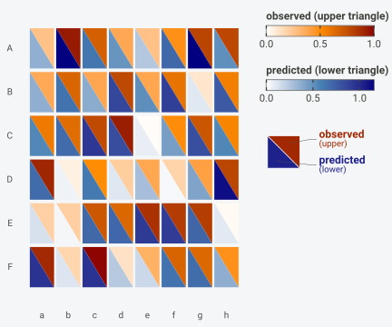
A bare character vector is read as the upper palette, with
lower_palette as its companion, which saves a call when
both sides are simple ramps:
biheat(observed, predicted,
palettes = c("grey95", "forestgreen"),
lower_palette = c("grey95", "purple4"))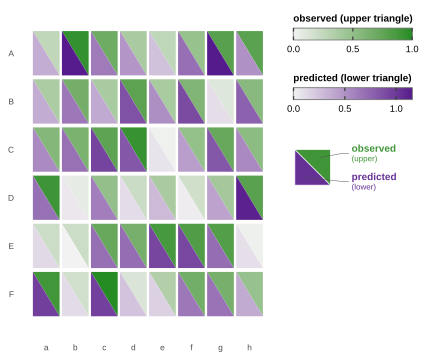
Three or more stops give a diverging ramp, which suits a matrix centred on zero. Residuals are the usual case:
residual <- predicted - observed
biheat(observed, residual,
upper_name = "observed",
lower_name = "residual",
palettes = palettes(c("white", "grey20"),
c("steelblue", "white", "firebrick")))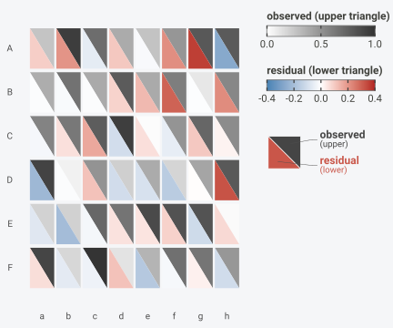
The colour a value lands on depends on the range the palette is
stretched across, which scale controls.
vignette("biheat") covers the choice between
"separate" and "shared".
Choosing a pair
Two properties matter more here than in a single-scale heatmap, because the two palettes have to be told apart inside one cell.
The two hues need to stay separable. The default red and blue remain distinguishable under the common red-green colour deficiencies, and a green paired with a red does not. Orange with purple, and green with purple, both hold up as alternatives.
Both ramps should start from a similar lightness. Anchoring each at white or a pale grey means a cell whose halves are both pale reads as two low values rather than as one low value beside a differently coloured one, and the split stays visible only where it carries information.
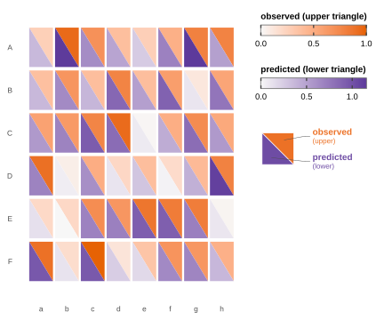
Ramps that start dark work when the panel is dense enough that pale cells would disappear, at the cost of making low values the loudest thing in the figure.
Printing the values
show_values = TRUE writes each number inside its own
triangle, at two significant digits:
biheat(observed[, 1:5], predicted[, 1:5], show_values = TRUE)
Labels are sized in millimetres by value_size, the same
unit ggplot2::geom_text() uses. The default of 3 suits a
panel of roughly this size; a denser grid needs a smaller number, and
the labels start to collide somewhere past 10 columns at the default
figure width.
biheat(observed, predicted, show_values = TRUE, value_size = 2.1)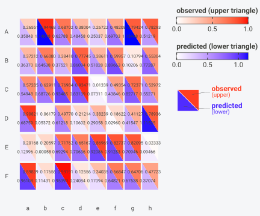
Cell geometry
cell_inset shrinks every cell on all four sides, as a
fraction of its width and height. The default of 0.04
leaves a thin gap that keeps neighbouring cells legible. 0
makes the grid contiguous:
biheat(observed, predicted, cell_inset = 0)
Larger values pull the cells apart, which reads well when the individual comparison matters more than the pattern across the panel:
biheat(observed, predicted, cell_inset = 0.15)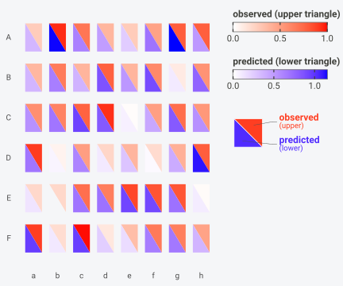
The argument accepts anything in [0, 0.5), and
0.5 would shrink a cell to nothing.
Outlines are separate from the gap. grid_colour draws a
border around each triangle and grid_linewidth sets its
weight, so a contiguous grid can still show its cut lines:
biheat(observed, predicted,
cell_inset = 0,
grid_colour = "white",
grid_linewidth = 0.6)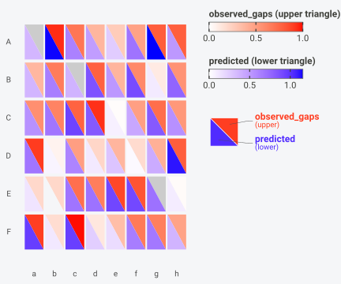
Both default to nothing drawn (NA colour at width
0). Outlining every triangle on a large matrix costs
legibility, so a fine linewidth pays off past a few hundred cells.
Missing cells
A cell missing a value on one side keeps its other half, and the gap
takes na_colour:
observed_gaps <- observed
observed_gaps[2, 3] <- NA
observed_gaps[5, 7] <- NA
observed_gaps[1, 1] <- NA
biheat(observed_gaps, predicted, na_colour = "grey80")
The default is "grey90". Something further from the
palettes in use makes an absent value harder to misread as a low one,
which matters most when a palette starts at white.
Skewed values
Each palette is stretched linearly across its range, so one extreme value compresses everything else into the pale end. A matrix of counts usually has this shape:
set.seed(7)
counts <- matrix(rpois(48, lambda = 3), 6, 8,
dimnames = list(species, sites))
counts[2, 4] <- 180
expected <- matrix(rpois(48, lambda = 3), 6, 8,
dimnames = list(species, sites))
expected[2, 4] <- 150
biheat(counts, expected)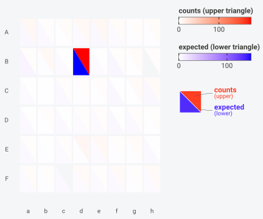
One cell holds the top of both scales and the other 47 sit near the
bottom. BiHeat has no transform argument, since transforming the matrix
before breed() does the job and keeps what was plotted
explicit:
biheat(log1p(counts), log1p(expected),
upper_name = "log1p(counts)",
lower_name = "log1p(expected)")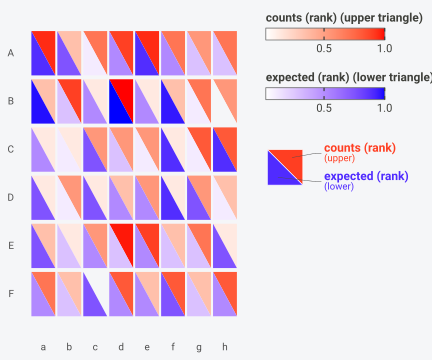
Ranking is the other option when only the ordering matters, and it puts both matrices on the same bounded scale as a side effect:
rank_matrix <- function(m) {
out <- matrix(rank(m, na.last = "keep"), nrow(m), ncol(m),
dimnames = dimnames(m))
out / max(out, na.rm = TRUE)
}
biheat(rank_matrix(counts), rank_matrix(expected),
scale = "shared",
upper_name = "counts (rank)",
lower_name = "expected (rank)")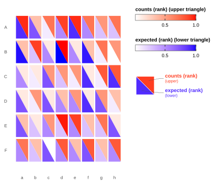
The colourbar labels report the transformed numbers under either
approach, which is why both examples above set upper_name
and lower_name to say so.
Ordering rows and columns
Rows are drawn top to bottom and columns left to right, in the order
they carry after breed() aligned them.
row_order and col_order take a permutation of
those labels and rearrange the panel.
Sorting by something computed from the data is the useful case. Here the species with the largest mean absolute error move to the top:
cells <- comes_out(breed(observed, predicted))
mae_by_species <- tapply(abs(cells$upper - cells$lower), cells$row, mean)
worst_first <- names(sort(mae_by_species, decreasing = TRUE))
round(sort(mae_by_species, decreasing = TRUE), 3)
#> A D B E F C
#> 0.165 0.128 0.096 0.085 0.075 0.074
biheat(observed, predicted, row_order = worst_first)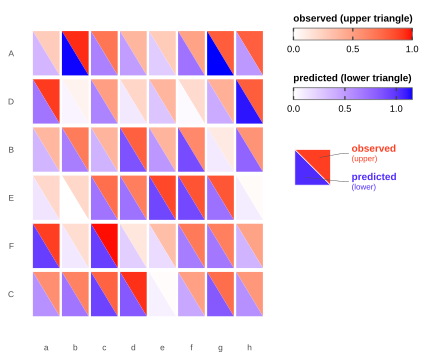
Column order works the same way, and the two combine:
site_totals <- colMeans(observed)
biheat(observed, predicted,
row_order = worst_first,
col_order = names(sort(site_totals, decreasing = TRUE)))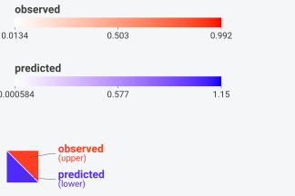
Both arguments require a full permutation of the labels, so a partial vector stops the call and every row stays in the panel:
The legend
legend_position takes "right" (the
default), "bottom", or "none".
legend_orientation controls whether the two colourbars
stack or sit side by side.
biheat(observed, predicted,
legend_position = "bottom",
legend_orientation = "horizontal")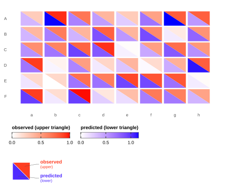
Below the two bars sits the key glyph: a split tile showing which
triangle belongs to which name, with a callout to each. It follows the
split setting, so it always matches the diagonal drawn in
the panel. show_key = FALSE drops it, which is worth doing
for a small multiple where the same key would repeat:
biheat(observed, predicted, show_key = FALSE)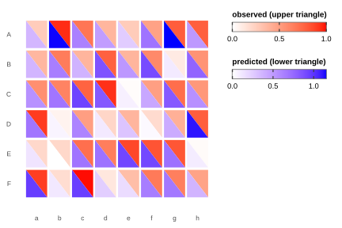
Dropping the key also changes the return type. With no glyph to
inject, the underlying ggplot comes back rather than a gtable, and that
object accepts ggplot2’s +:

legend_position = "none" removes the legend and the key
together.
bi_legend() builds the same paired legend as a
standalone grob, for figures where the panel is assembled somewhere
else:
grid::grid.draw(
bi_legend("observed", "predicted",
upper_range = range(observed),
lower_range = range(predicted),
split = "down")
)
Its ranges are yours to supply, so a legend can be shared across several panels by passing the pooled range to all of them.
Titles and axis labels
title, subtitle, and caption
behave the way they do anywhere in ggplot2. theme_biheat()
centres the first two and italicises the caption:
biheat(observed, predicted,
title = "Occurrence probability",
subtitle = "field survey against model fit",
caption = "6 species x 8 sites")
Axis titles are blank by default, since the tick labels usually name
the axis on their own. Supplying xlab or ylab
switches that axis title back on:
biheat(observed, predicted, xlab = "site", ylab = "species")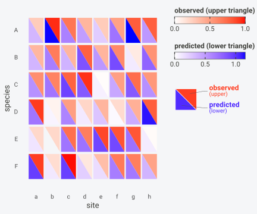
upper_name and lower_name override the
labels on the colourbars and in the key glyph. breed()
reads them from the symbols you passed, so they only need setting when
the variable names are unhelpful:
biheat(observed, predicted,
upper_name = "field survey",
lower_name = "model fit",
show_key = FALSE)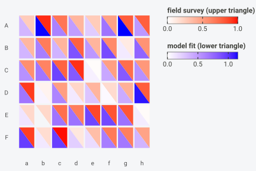
The theme
theme_biheat() is a
ggplot2::theme_minimal() with the panel grid, background,
axis ticks, and axis titles removed, tick labels laid horizontally, and
the legend keyed to the left. It is applied for you inside
plot(), and exported for use with
geom_biheat().
base_size scales the whole thing:
library(ggplot2)
cells$site <- factor(cells$col, levels = sites)
cells$species <- factor(cells$row, levels = rev(species))
ggplot(cells, aes(site, species, upper = upper, lower = lower)) +
geom_biheat() +
theme_biheat(base_size = 15)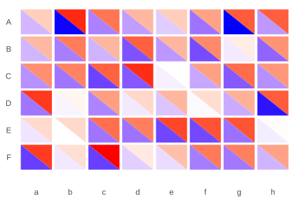
base swaps the theme underneath, which keeps the heatmap
adjustments while changing everything else:
ggplot(cells, aes(site, species, upper = upper, lower = lower)) +
geom_biheat() +
theme_biheat(base = theme_dark(base_size = 11))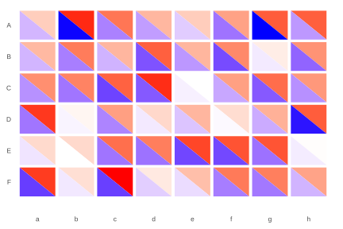
Keeping a set of figures consistent
Several BiHeat panels in one document need the same options, and the
readable way to do that is a configured clutch rather than a repeated
argument list. incubate() is additive, so a shared
configuration can be applied first and the per-figure options added
after:
house_style <- function(clutch) {
incubate(clutch,
palettes = palettes(c("grey97", "#E66100"),
c("grey97", "#5D3A9B")),
cell_inset = 0.06,
legend_position = "bottom",
legend_orientation = "horizontal")
}
house_style(breed(observed, predicted)) |> plot(title = "Panel A")
house_style(breed(observed, residual)) |> plot(title = "Panel B")Colours only mean the same thing across panels if the ranges match,
and scale = "shared" shares a range between the two
triangles of one figure rather than across figures. Matching across
figures means fixing the range yourself, which the clutch route does not
expose; geom_biheat() takes upper_range and
lower_range for exactly this, and
vignette("geom-biheat") covers it.
Saving
ggplot2::ggsave() accepts a biheat_plot
gtable as it does a ggplot:
p <- biheat(observed, predicted, title = "Occurrence probability")
ggplot2::ggsave("biheat.png", p, width = 7, height = 5.5, dpi = 300)
ggplot2::ggsave("biheat.pdf", p, width = 7, height = 5.5)Give the figure room. The legend column holds two colourbars and the key glyph at fixed centimetre sizes, so a width under about 5 inches squeezes the panel rather than the legend. Moving the legend to the bottom buys back the width.
Where to go next
vignette("biheat")covers the clutch, alignment, and the lifecycle.vignette("geom-biheat")covers the ggplot2 layer for panels you assemble yourself.